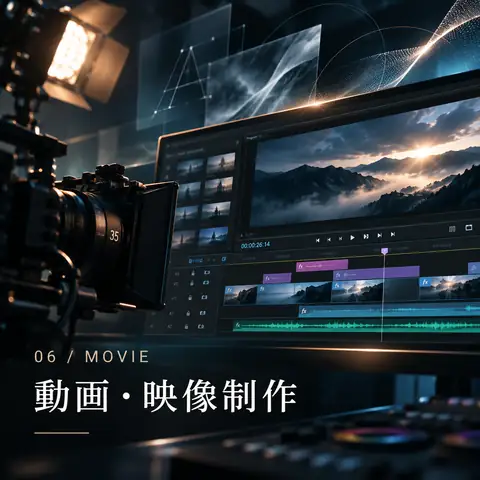

工事・施工、業務支援からAIイラスト・動画、ツール・アプリ制作まで。写真・イラスト・映像を交えて紹介します。
工場内の設備・営繕から住宅・店舗の改修工事まで。
現場の運用や人材・求人、施設管理を支援。
イラスト・動画から実際に使うツールまで。

溶接・建築、工場の現場応援と施設清掃をイメージ映像で紹介します。後半はAIイラスト、広告、業務アプリ、動画編集の制作例です。
23秒・無音
施工・業務支援・AI制作に関するご相談はこちら。お問い合わせだけでも受け付けています。